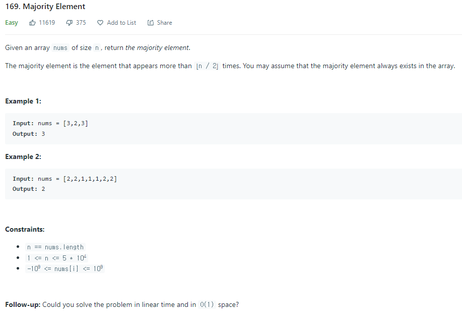
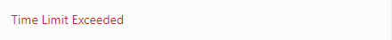
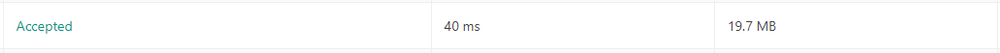

#INFO
난이도 : Easy
출처 : https://leetcode.com/problems/majority-element/
Majority Element - LeetCode
Level up your coding skills and quickly land a job. This is the best place to expand your knowledge and get prepared for your next interview.
leetcode.com

#SOLVE
다양한 방식으로 접근할 수 있는 문제입니다.
비효율적인 코드로도 풀이할 수 있지만 Follow-up 조건인 Time Complexity - Linear Time & Space Complexity - O(1) 을 지켜서 문제를 풀이하고자 할 경우엔 상당히 애를 먹을 수 있습니다.
(단, Follow-up 조건을 지키지 않아도 제출이 되기는 합니다.)
1. Brute Force
Time Complexity - O(N²)
첫 번째 방식은 가장 직관적인 Brute Force (완전 탐색) 알고리즘을 이용한 풀이입니다.
그냥 이중 For 문을 사용해 배열에 존재하는 모든 원소를 차례로 탐색한 뒤 배열의 크기 (n) / 2 를 초과하는 원소가 나온다면 그대로 출력하면 됩니다.
class Solution {
public:
int majorityElement(vector<int>& nums) {
int majority = nums.size() / 2;
for(const int& i : nums){
int count = 0;
for(const int& j : nums){
if(j == i) count++;
}
if(count > majority){
return i;
}
}
return 0;
}
};
하지만 for을 2중으로 겹치다 보니 시간 복잡도가 O(N²)이 되어 Time Limit Exceeded가 출력 되었습니다.

2. Hash
Time Complexity - O(N)
Space Complexity - O(N)
이번에는 해시 자료구조 를 사용해 문제를 풀이해 보도록 하겠습니다.
STL의 unordered_map container를 사용했습니다.
(*unordered_map container의 사용법에 대해 모르시는 분들은 다음 포스팅을 참고해 주세요.)
→ STL map Container 사용 방법 정리 (feat map & [hash_map]unordered_map & multi_map)
class Solution {
public:
int majorityElement(vector<int>& nums) {
unordered_map<int, int> major;
for(const auto& i : nums){
if(major.end() == major.find(i)) major[i] = 1;
else major[i]++;
}
for(const auto& i : major){
if(i.second > nums.size() / 2)
return i.first;
}
return 0;
}
};
unordered_map<int, int> type major 를 하나 선언한 뒤, nums vector를 탐색합니다.
만약 major에 탐색중인 원소가 존재하지 않는다면 키값으로 새로 추가합니다.
혹은 탐색중인 원소가 major에 존재한다면 major의 value를 1 증가시킵니다.
마지막으로 major의 키값을 모두 탐색하여 키의 value가 nums.size() / 2 보다 큰 키를 발견하면 키값을 리턴합니다.

Hash 자료구조를 이용한 방식은 Time Complexity 는 Linear Time 즉, O(N)시간에 탐색하여 제출에 성공하긴 했지만 Space Complexity가 O(N)으로 Follow-up 제시 조건인 O(1) 을 만족하지는 못합니다.
3. Moore's Voting Algorithm 과반수 투표 알고리즘
Time Complexity - O(N)
Space Complexity - O(1)
마지막은 과반수 투표 알고리즘을 이용한 풀이입니다.
과반수 투표 알고리즘은 배열 내에 과반수에 해당하는 원소가 존재하는 보장이 된다면 결과값으로 항상 과반수 원소를 도출합니다.
단, 과반수 만큼의 원소가 등장한다는 보장이 없으면 가비지값이 도출될 수도 있습니다. 하지만 이 문제는 문제에서 항상 배열 안에 과반수 이상의 원소가 등장한다는 코멘트가 달려있기에 이 알고리즘을 사용해도 괜찮습니다.
원리는 간단합니다.
한 지역구의 투표자들이 국회의원을 뽑는다고 가정해 봅시다.
투표자는 총 7명이며, 2명의 후보가 국회의원 선거에 출마했습니다.
1번 후보를 선택 시에는 1이 적힌 투표용지를, 2번 후보를 선택하는 경우엔 2가 적힌 투표용지를 제출합니다.
여기서 2종류의 변수를 선언합니다. 변수의 용도는 다음과 같습니다.
majority : 당선이 유력한 후보
count : 출마자 간의 투표수 차이
1번째 투표자가 2번 후보를 투표했습니다.
2번 후보자와 1번 후보자 사이의 투표차(count)는 1이며, 현재 당선이 유력한 후보(majority)는 2번 후보가 되었습니다.
count : 1, majority : 1번 후보
2번째 투표자도 마찬가지로 2번 후보를 투표했습니다.
count : 2 , majority : 2번 후보
3번째 투표자는 1번 후보를 투표했습니다.
count : 1 , majority : 2번 후보
4번째 투표자가 1번 후보를 투표했습니다.
count : 0, majority : 2번 후보
5번째 투표자가 1번 후보를 투표했습니다.
이제 당선이 유력한 출마자(majority)가 2번 후보에서 1번 후보로 변경됩니다.
count : 1, majority : 1번 후보
6번째 투표자가 2번 후보를 투표했습니다.
count : 0, majority : 1번 후보
7번째 투표자가 2번 후보를 투표했습니다.
majority가 2번 후보로 변경됩니다.
count : 1, majority : 2번 후보
투표자들의 투표가 종료되어 2번 후보가 당선됩니다.
위 과정을 코드로 표현하면 다음과 같습니다.
class Solution {
public:
int majorityElement(vector<int>& nums) {
int majority, count = 0;
for(int i = 0; i < nums.size(); ++i){
if(count != 0){
count += (nums[i] == majority ? 1 : -1);
}
else{
majority = nums[i];
++count;
}
}
return majority;
}
};